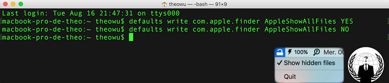

-
iOS Application: SimpleList

- SimpleList is an iOS application type toDoList or ckecklist. Learning from Ray Wenderlich's tutorial, i wrote the code in Swift from scratch. The application lets you create SimpleLists which will include list items which indicate things to be done or already done with green checkmarks in front of them. You can also schedule a local notification for each item.
- iOS GitHub
-
MacOS Application: GifViewer

- GifViewer is a Mac OS X / macOS application that lets you read gif files as a book. I've tried to find something that package multiple gif files into a single file, like pdf or something but i haven't found any software like this, so I wrote it myself in Swift, inspiring by this tutorial from Ray Wenderlich. You can replace the gif files under the project folder and modify the variable indicating total number of pages you want to include in the app.
- GitHub
-
MacOS Application: MenubarHide
- MenubarHide is a Mac OS X / macOS application that lets you show or hide system-cached files via a little menubar icon. Simply launch application without typing long commands every time in the terminal to show or hide those annoying system files.
- GitHub
- {% if site.duoshuo_username %}
-
Theo
An amateur majoring in Web & Mobile developement,
focusing on iOS Development, UX Design and French language learning/teaching.